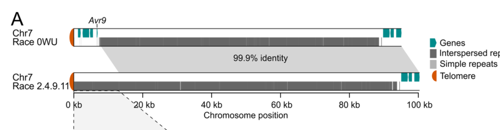

AVR9 (race-specific elicitor A9) is a small secreted cysteine-rich effector of the biotrophic tomato leaf mould fungus Fulvia fulva (syn. Cladosporium fulvum). The 63-residue precursor carries an N-terminal signal peptide; after secretion the proprotein is trimmed by fungal and host proteases into a stable 28-residue mature peptide that accumulates in the apoplast of infected tomato leaves, where the fungus grows between mesophyll cells. The mature peptide is a three-stranded antiparallel beta-sheet held together by three disulfide bonds arranged as a cystine knot (knottin), with a fold resembling carboxypeptidase inhibitors; however, no protease-inhibitory or other biochemical activity has been demonstrated, and the intrinsic contribution of AVR9 to fungal virulence is unknown. AVR9 is best known as an avirulence determinant: in tomato carrying the receptor-like protein Cf-9 it triggers a hypersensitive response (localized necrosis, oxidative burst and defence activation) and resistance, in accordance with the gene-for-gene model. Recognition appears to be indirect; radiolabelled AVR9 binds a high-affinity plasma-membrane site present in tomato with or without Cf-9 and in other solanaceous plants, and binding affinity of mutant peptides correlates with their necrosis-inducing activity. Avr9 expression is strongly induced in planta and under nitrogen limitation through the nitrogen regulator NRF1. Field races that overcome Cf-9 resistance typically lack the entire subtelomeric Avr9 gene.
| GO Term | Evidence | Action | Reason |
|---|---|---|---|
|
GO:0080185
effector-mediated activation of plant hypersensitive response by symbiont
|
EXP
PMID:10998185 Specific HR-associated recognition of secreted proteins from... |
ACCEPT |
Summary: Lauge et al. tested tomato lines and Lycopersicon accessions by injection of purified C. fulvum proteins and found HR-associated recognition of AVR9 (alongside AVR4 and other secreted proteins) in multiple Lycopersicon species. AVR9-triggered, Cf-9-dependent HR is the single best-established biological activity of this peptide.
Reason: The GO:0080185 definition explicitly covers the direct or indirect recognition of a symbiont effector by plant resistance proteins leading to HR, which is exactly what AVR9 does in Cf-9 plants. In GO the effector that is recognised is treated as a participant in this symbiont process (analogous to a ligand participating in the signalling it triggers), and the same term is used for other recognised fungal avirulence effectors. Abstract-only access, but the abstract explicitly reports HR-associated recognition of AVR9, and the curator has read the full text. Note: in the current ontology GO:0080185 is_a GO:0034055, whose definition says the host cell death is activated "to suppress the host innate immune response"; that inherited implication does not fit an avirulence factor whose recognition confers resistance (see suggested_questions).
Supporting Evidence:
PMID:10998185
Host resistance is based on specific recognition of extracellular fungal proteins, resulting in a hypersensitive response (HR).
PMID:10998185
in addition to recognition of the race-specific elicitors AVR4 and AVR9 of C. fulvum, occurs among Lycopersicon species
|
|
GO:0080185
effector-mediated activation of plant hypersensitive response by symbiont
|
EXP
PMID:16167771 The Cf-4 and Cf-9 resistance genes against Cladosporium fulv... |
ACCEPT |
Summary: Kruijt et al. identified AVR9-responsive plants throughout the genus Lycopersicon and, by agroinfiltration, Hcr9 homologues (Hcr9-Avr9s) highly identical to Cf-9 that mediate AVR9 recognition.
Reason: Experimental demonstration that AVR9 elicits Cf-9/Hcr9-dependent responses in diverse wild tomato species; consistent with the core, well-established role of AVR9 as the elicitor of Cf-9-mediated HR. Abstract-only; deferring to the curator on assay details.
Supporting Evidence:
PMID:16167771
confer resistance to strains of the leaf mold fungus Cladosporium fulvum that secrete the Avr4 and Avr9 elicitor proteins, respectively
PMID:16167771
Plants responsive to the Avr4 and Avr9 elicitor proteins were identified throughout the genus Lycopersicon.
|
|
GO:0140404
effector-mediated perturbation of host innate immune response by symbiont
|
EXP
PMID:26946045 Broad taxonomic characterization of Verticillium wilt resist... |
MODIFY |
Summary: This paper characterises Ve1 homologues and Ave1 recognition from Verticillium dahliae; AVR9 is not mentioned in the cached abstract and was presumably used in the full text as the Cf-9/Avr9 HR control in transient assays. The general claim that AVR9 modulates (here, activates) host innate immunity is correct.
Reason: Full text not available to this review, so the specific assay cannot be verified; the experimental claim is not disputed and is not removed. The broad term (modulation, either activation or suppression, of host innate immunity) is correct for AVR9, but the only immune-modulating activity ever documented for AVR9 is elicitation of Cf-9-dependent HR, so the informative term is GO:0080185 (already carried with experimental support). Refining avoids implying an immunosuppressive activity, which the perturbation subtree mostly describes and which AVR9 is not known to have.
Proposed replacements:
effector-mediated activation of plant hypersensitive response by symbiont
Supporting Evidence:
PMID:26946045
plants use immune receptors to try and intercept such effectors in order to prevent pathogen colonization
PMID:10998185
in addition to recognition of the race-specific elicitors AVR4 and AVR9 of C. fulvum, occurs among Lycopersicon species
|
|
GO:0140404
effector-mediated perturbation of host innate immune response by symbiont
|
TAS
PMID:25902074 Novel Mutations Detected in Avirulence Genes Overcoming Toma... |
MODIFY |
Summary: Iida et al. (full text) survey Avr genes in Japanese C. fulvum isolates; the introduction states that AVR9 triggers HR in Cf-9 plants, and all isolates overcoming Cf-9 lacked the entire Avr9 gene. The paper also states that the biological function of AVR9 is unknown.
Reason: The statement traceable to this paper is specifically that AVR9 triggers a hypersensitive response in Cf-9 plants, which is captured precisely by GO:0080185. The broad "perturbation" parent adds nothing and, because its subtree is dominated by suppression terms, is easily misread as implying an immunosuppressive virulence activity that has never been shown for AVR9.
Proposed replacements:
effector-mediated activation of plant hypersensitive response by symbiont
Supporting Evidence:
PMID:25902074
their encoded proteins trigger a hypersensitive response (HR) in host plants carrying the corresponding Cf-2, Cf-4, Cf-4E, Cf-5, and Cf-9 genes, respectively
PMID:25902074
Although the biological function of the Avr9 protein is not known
|
|
GO:0140404
effector-mediated perturbation of host innate immune response by symbiont
|
TAS
PMID:9437864 Characterization of the tomato Cf-4 gene for resistance to C... |
MODIFY |
Summary: Thomas et al. clone Cf-4 and compare it with Cf-9; the paper states that Cf-9 confers resistance through recognition of AVR9. AVR9 itself is not studied experimentally.
Reason: The traceable statement is that AVR9 is the avirulence determinant recognised by Cf-9 to give resistance, i.e. Cf-9-dependent activation of host immunity/HR. GO:0080185 captures this more precisely than the broad perturbation parent.
Proposed replacements:
effector-mediated activation of plant hypersensitive response by symbiont
Supporting Evidence:
PMID:9437864
confer resistance to Cladosporium fulvum through recognition of different avirulence determinants (AVR4 and AVR9)
|
|
GO:0140593
host apoplast
|
IDA
PMID:8208859 The AVR9 race-specific elicitor of Cladosporium fulvum is pr... |
NEW |
Summary: Mature 28-residue AVR9 accumulates in infected tomato leaves and was originally purified from apoplastic fluid of infected tomato; plant factors complete its processing. The apoplast is where AVR9 is perceived.
Reason: Location annotation, so the process participation test does not apply. GOA has no cellular component annotation for AVR9 even though its apoplastic localization is its defining feature; host apoplast (GO:0140593) is the term used for other apoplastic fungal effectors (e.g. Mg1LysM, Mg3LysM, AvrLm1) in GOA.
Supporting Evidence:
PMID:8208859
the elicitor accumulates in infected leaves as a 28-amino acid (aa) peptide
PMID:8208859
We demonstrated that plant factors process the 34-aa peptide into the mature 28-aa peptide.
PMID:8555455
The amino acid sequence of the processed AVR9 peptide present in apoplastic fluid (AF) of pAVIR1 transformed plants
file:FULFL/AVR9/AVR9-deep-research-falcon.md
28-residue mature elicitor recovered from infected tomato-leaf
|
Q: GO:0080185 (effector-mediated activation of plant HR by symbiont) is_a GO:0034055, whose definition states that host cell death is activated "to suppress the host innate immune response", which in turn is_a GO:0140403 (effector-mediated suppression of host innate immune response). For avirulence effectors such as AVR9, recognition of which activates immunity and confers resistance, this inherits a false suppression claim. Should GO:0080185 be re-parented (e.g. directly under GO:0140404 perturbation of host innate immune response) or GO:0034055 be redefined?
Q: GO represents "being recognised by a host immune receptor" only through the process term GO:0080185, with no molecular function. Is the effector legitimately a participant (ligand-like) in this process, and should there be a molecular function or relation for an elicitor that is perceived indirectly (no demonstrated binding to its cognate receptor)?
Q: What is the identity of the high-affinity AVR9 binding site present in plasma membranes of Cf-9 and Cf-0 tomato and other Solanaceae, and is it the virulence target guarded by Cf-9?
Q: Does AVR9 have any intrinsic virulence function on susceptible (Cf-0) tomato, given its carboxypeptidase-inhibitor-like fold and the frequent deletion of Avr9 in field races?
Experiment: Compare fitness and colonisation of isogenic Avr9 deletion and complemented strains on Cf-0 tomato, including competition assays, to test for an intrinsic virulence contribution.
Experiment: Affinity purification / crosslinking of labelled AVR9 to tomato plasma membranes from Cf-0 and Cf-9 plants to identify the high-affinity binding protein, followed by tests of whether it associates with Cf-9/SOBIR1.
Experiment: Screen AVR9 against a panel of tomato apoplastic proteases and other candidate targets suggested by the knottin fold to identify a biochemical activity.
The research report should be a detailed narrative explaining the function, biological processes, and localization of the gene product. Citations should be given for all claims.
You should prioritize authoritative reviews and primary scientific literature when conducting research. You can supplement
this with annotations you find in gene/protein databases, but these can be outdated or inaccurate.
We are specifically interested in the primary function of the gene - for enzymes, what reaction is catalyzed, and what is the substrate specificity? For transporters, what is the substrate? For structural proteins or adapters, what is the broader structural role? For signaling molecules, what is the role in the pathway.
We are interested in where in or outside the cell the gene product carries out its function.
We are also interested in the signaling or biochemical pathways in which the gene functions. We are less interested in broad pleiotropic effects, except where these elucidate the precise role.
Include evidence where possible. We are interested in both experimental evidence as well as inference from structure, evolution, or bioinformatic analysis. Precise studies should be prioritized over high-throughput, where available.
Identity verified. The requested AVR9 is the Fulvia fulva tomato-leaf-mold protein described in much of the experimental literature under the name Cladosporium fulvum Avr9. The gene encodes a small, secreted race-specific elicitor, not a characterized enzyme or transporter. Its firmly established activity is to provoke Cf-9-dependent immunity when the fungus encounters a tomato plant carrying the matching resistance gene. The UniProt accession P22287 is the identifier supplied for this report; the cited experiments independently establish the fungal gene, protein description, and biological identity. Honée et al., Plant Molecular Biology, December 1995; Huang and Joosten, Trends in Plant Science, published online 2024, volume dated 2025. (honee1995productionofthe pages 1-3, schol2025mutationordeletion pages 1-5, huang2025immunesignalingreceptorlike pages 3-5)
Avr9 encodes a 63-amino-acid precursor. Its 23-residue N-terminal signal sequence directs secretion, leaving a 40-residue proprotein; further fungal and/or plant proteolysis produces the 28-residue mature elicitor recovered from infected tomato-leaf apoplastic fluid. AVR9 therefore performs its known extracellular activity in the leaf apoplast, where fungal hyphae grow between plant cells and the peptide can be perceived at the plant-cell surface. In culture, processing can stop at longer peptide forms; these should not be mistaken for a different AVR9 gene product. Plant-produced AVR9 recovered from apoplastic fluid had the same processed sequence and specific activity as infection-derived peptide. Honée et al., 1995. (honee1995productionofthe pages 1-3)
The mature peptide has a three-stranded antiparallel β-sheet and three disulfide bonds, experimentally assigned as Cys2–Cys16, Cys6–Cys19, and Cys12–Cys26 in mature-peptide numbering. This is a cystine-knot-like scaffold, not evidence of a catalytic domain. Correctly folded synthetic AVR9 retains the activity of native fungal peptide; disruption of the disulfide framework compromises necrosis-inducing activity. van den Hooven et al., European Journal of Biochemistry, August 1999; van den Burg, Wageningen University dissertation, 2003. (hooven1999foldingandconformational pages 1-2, burg2003studiestowardsthe pages 51-55)
The fungus’s intrinsic biochemical use for AVR9 remains unresolved. Its fold resembles that of certain carboxypeptidase inhibitors, but assays of AVR9 and inhibitor chimeras did not demonstrate carboxypeptidase inhibition. Neither an endogenous tomato substrate nor a definitive virulence-associated binding partner has been established. Thus, annotations such as “tomato carboxypeptidase inhibitor” or “ion-channel blocker” would turn hypotheses into findings. AVR9 should also not be conflated with this fungus’s Avr2, which inhibits host cysteine proteases, or Avr4, which binds chitin and protects fungal walls against chitinases. van den Burg, 2003; Karimi-Jashni, Agrotechniques in Industrial Crops, accepted October 14, 2024. (burg2003studiestowardsthe pages 149-152, burg2003studiestowardsthe pages 71-76, karimijashni2024glycosylationanalysisofa pages 1-2)
The clearest functional experiment is genotype-specific elicitation: administering AVR9 to Cf-9 tomato induces localized necrosis or a hypersensitive response (HR), whereas tomato lacking Cf-9 does not respond in the same way. Expressing Avr9 in otherwise Cf-9-negative plants yielded biologically active peptide; crossing Avr9-expressing tomato with Cf-9 tomato produced severe necrosis and plant death. These experiments identify an active extracellular Avr9–Cf-9 gene-for-gene recognition system, although they do not show that AVR9 is beneficial to the fungus on susceptible hosts. Honée et al., 1995. (honee1995productionofthe pages 1-3)
Recognition must not be equated with proven direct AVR9–Cf-9 binding. Radiolabeled AVR9 binds a high-affinity activity in tomato plasma-membrane preparations with or without Cf-9; direct AVR9–Cf-9 binding has not been established in the cited biochemical work. The identity and native role of this additional binding activity remain unresolved. Conversely, a receptor-complex experiment specific to Avr9 showed that Avr9 elicitation in Nicotiana benthamiana promoted co-immunoprecipitation of Cf-9 with SERK1 and SERK3/BAK1, relative to an Avr4 control. Cf-9 is a cell-surface leucine-rich-repeat receptor-like protein without its own intracellular kinase domain; the current receptor-like-protein framework invokes SOBIR1 and recruited SERK kinases to convey extracellular recognition into intracellular defense signaling. The detailed ligand-binding arrangement for AVR9 remains a model, not a resolved AVR9–Cf-9 structure. de Wit et al., Antonie van Leeuwenhoek, February 1997; Postma et al., New Phytologist, April 2016; Huang and Joosten, published online 2024. (wit1997molecularandbiochemical pages 2-4, postma2016avr4promotescf4 pages 10-11, huang2025immunesignalingreceptorlike pages 1-3, huang2025immunesignalingreceptorlike pages 5-7)
Downstream responses reported for the AVR9/Cf-9 interaction include oxidative signaling, defense-associated transcription and ultimately HR. In experiments using AVR9-containing apoplastic fluid on Cf-9 tomato cotyledons, an oxidative burst was observed by about 3 hours, ethylene production and loss of membrane integrity at approximately 9–10 hours, and increased free salicylic acid from approximately 12 hours. These are host responses to AVR9, not biochemical reactions catalyzed by the fungal peptide; timings depend on the experimental preparation and should not be read as fixed pathway constants. Cf-4/Avr4-specific endocytosis or kinase-knockout results likewise should not automatically be assigned to Cf-9/AVR9. de Wit et al., 1997; Postma et al., 2016. (wit1997molecularandbiochemical pages 2-4, postma2016avr4promotescf4 pages 10-11)
Expression links AVR9 to the infection environment: Avr9 is strongly expressed during colonization and induced under nitrogen limitation in vitro. Knocking out the fungal nitrogen-response regulator NRF1 prevented starvation-induced Avr9 expression and strongly reduced its expression during infection. Importantly, those regulator-deficient strains remained as virulent as wild type on susceptible tomato and avirulent on Cf-9 tomato. This is evidence for regulatory control, not a demonstration that AVR9 itself has no virulence function: NRF1 is a global regulator, and sufficient stable elicitor evidently remained for recognition. Pérez-García et al., Molecular Plant-Microbe Interactions, March 2001. (perezgarcia2001expressionofthe pages 1-2)
Two 2024 primary studies refine, but do not settle, the functional annotation:
Practical use is chiefly in tomato resistance research and breeding. AVR9 peptide delivery or transient expression can test Cf-9-dependent recognition; fungal Avr9 presence or absence helps explain why a given isolate is recognized or escapes Cf-9 resistance. Conversely, the documented deletion mechanism warns that Cf-9 alone is not necessarily durable against evolving fungal populations. Constitutive co-expression of Avr9 and Cf-9 is not a ready-to-deploy resistance strategy: the original tomato crosses suffered extensive necrosis and death. Honée et al., 1995; Zaccaron and Stergiopoulos, 2024. (honee1995productionofthe pages 1-3, zaccaron2024analysisoffive pages 6-7)
Recommended functional annotation: “Small secreted, proteolytically matured cystine-knot-like apoplastic effector of F. fulva; extracellular elicitor of Cf-9-dependent tomato immune signaling and hypersensitive cell death.” Annotate its native fungal molecular target and virulence biochemistry as unknown. This preserves the strongest experimental conclusion without assigning AVR9 the demonstrated activities of other fungal effectors. (honee1995productionofthe pages 1-3, postma2016avr4promotescf4 pages 10-11, burg2003studiestowardsthe pages 149-152)
The following evidence summary separates established observations from unresolved mechanisms. (honee1995productionofthe pages 1-3, karimijashni2024glycosylationanalysisofa pages 1-2, zaccaron2024analysisoffive pages 6-7)
| Aspect | Specific observations | Interpretation and limits |
|---|---|---|
| Identity and molecular product | Target: Avr9 from Fulvia fulva, synonymous with Cladosporium fulvum, UniProt P22287. It encodes a 63-aa pre-proprotein containing a 23-aa signal peptide and a secreted 40-aa proprotein; the principal mature in-planta product is a 28-aa race-specific elicitor. Honée et al., 1995, published December 1995. (honee1995productionofthe pages 1-3) | This is the specified fungal AVR9, not a similarly named AVR protein from another organism. It is a small, secreted, cysteine-rich apoplastic effector rather than an enzyme, transporter, or structural protein. The accession derives from the supplied UniProt record, while the literature independently confirms the organism, gene, and product sizes. |
| Location and processing | The signal peptide directs secretion, after which fungal and host proteases process the 40-aa proprotein into the 28-aa peptide recovered from infected-leaf apoplastic fluid. Fungal cultures can contain incompletely processed 32–34-aa forms. Plant-expressed AVR9 carrying the native fungal signal peptide was also recovered from apoplastic fluid with the same sequence and activity as infection-derived AVR9. Honée et al., 1995, published December 1995. (honee1995productionofthe pages 1-3) | AVR9 acts in the tomato leaf apoplast, outside fungal and plant plasma membranes. Incompletely processed culture products should not be confused with the predominant mature in-planta peptide. |
| Structure | Mature AVR9 is a 28-residue, three-stranded antiparallel beta-sheet stabilized by three experimentally mapped disulfides: Cys2–Cys16, Cys6–Cys19, and Cys12–Cys26. These form an inhibitor-cystine-knot-like scaffold. Correctly folded synthetic AVR9 was as active as native fungal AVR9, whereas reduction or disruption of its disulfides abolished necrosis-inducing activity. van den Hooven et al., 1999, published August 1999; van den Burg, 2003, published 2003. (hooven1999foldingandconformational pages 1-2, burg2003studiestowardsthe pages 51-55) | No conventional catalytic domain is expected in this very short mature peptide. Structural similarity to carboxypeptidase inhibitors does not establish equivalent biochemical activity. |
| Host recognition and signaling | Extracellular AVR9 specifically triggers necrosis and a hypersensitive response in tomato carrying the LRR receptor-like protein Cf-9, but not in plants lacking Cf-9. Direct AVR9–Cf-9 binding was not detected, and an AVR9 high-affinity membrane-binding activity occurs in plants lacking Cf-9. In Nicotiana benthamiana, AVR9 promoted association of Cf-9 with SERK1 and BAK1/SERK3, supporting activation of a Cf-9, SOBIR1, and SERK cell-surface complex. Reported outputs include ROS, MAPK activation, defense-gene expression, salicylic-acid accumulation, membrane leakage, and HR. Luderer et al., 2001, published July 2001; Postma et al., 2016, published April 2016; Huang and Joosten, published online in 2024. (wit1997molecularandbiochemical pages 2-4, huang2025immunesignalingreceptorlike pages 1-3, postma2016avr4promotescf4 pages 10-11) | Firm annotation: AVR9 is an extracellular immunogenic effector that activates Cf-9-dependent cell-surface immunity. Whether Cf-9 senses AVR9 indirectly through an unidentified target or high-affinity binding site remains unresolved. Cf-4 and Avr4 endocytosis results must not be assigned directly to AVR9. |
| Native biochemical function | AVR9 resembles carboxypeptidase inhibitors structurally, but purified AVR9 and AVR9–carboxypeptidase-inhibitor chimeras showed no detectable carboxypeptidase inhibition. Reported antibacterial, antifungal, and tested omega-conotoxin-like activities were also negative. No definitive tomato interactor, virulence substrate, or catalytic activity has been identified. van den Burg, 2003, published 2003; Karimi-Jashni, 2024, accepted October 14, 2024. (burg2003studiestowardsthe pages 149-152, karimijashni2024glycosylationanalysisofa pages 1-2, burg2003studiestowardsthe pages 71-76) | AVR9 should not be annotated as a protease inhibitor. Possible effects on another protease class, an ion channel, or another host target remain hypotheses. This distinguishes AVR9 from Avr2, a demonstrated cysteine-protease inhibitor, and Avr4, a demonstrated chitin-binding protector of fungal walls. |
| Nitrogen regulation | Avr9 is strongly expressed in planta and induced by nitrogen limitation in vitro. Disrupting the GATA-family regulator NRF1 prevented nitrogen-starvation induction and strongly reduced Avr9 expression. Nevertheless, NRF1-deficient fungi remained as virulent as wild type on susceptible tomato and still produced enough AVR9 in planta to remain avirulent on Cf-9 tomato. Pérez-García et al., 2001, published March 2001. (perezgarcia2001expressionofthe pages 1-2) | Nitrogen-responsive regulation connects Avr9 expression to the nutrient-poor infection environment, but it neither identifies a biochemical substrate nor proves that AVR9 itself is required for fungal virulence. |
| Recent 2024 glycosylation | Mass spectrometry of fungus-secreted AVR9 detected partially processed 31-, 32-, and 34-aa forms, including species bearing two GlcNAc and six mannose residues. Glycosylated and less-glycosylated or unglycosylated preparations caused comparable Cf-9-dependent HR. Karimi-Jashni, 2024, accepted October 14, 2024. (karimijashni2024glycosylationanalysisofa pages 1-2, karimijashni2024glycosylationanalysisofa pages 4-6) | The study demonstrates fungal N-glycosylation under the tested culture conditions, but not that glycosylation is required for target binding, in-planta stability, virulence, or Cf-9 recognition. The canonical infection-derived endpoint remains the 28-aa mature peptide. |
| Recent 2024 gene deletion | Comparative near-complete genomes placed Avr9 6.6 kb from the chromosome-7 telomere in a repeat-rich region. In Race 2.4.9.11, the first 7.8 kb carrying Avr9 was replaced by a 13.1-kb repeat-rich segment nearly identical to the chromosome-2 tip. Loss of Avr9 is associated with race-9 escape from Cf-9 resistance. Zaccaron and Stergiopoulos, 2024, published January 2024. (zaccaron2024analysisoffive pages 6-7, zaccaron2024analysisoffive media 97b5ee60) | This establishes a repeat-associated structural-variation mechanism for Avr9 loss and Cf-9 resistance breakdown. It supports resistance-gene stacking rather than reliance on Cf-9 alone, but does not by itself quantify the virulence cost of deleting Avr9. |
Table: Evidence-grade summary of the verified Fulvia fulva AVR9 protein, separating established secretion, structure, and Cf-9 recognition from its unresolved native biochemical function. The table also captures key 2024 glycosylation and genome-deletion findings.
References
(honee1995productionofthe pages 1-3): Guy Honée, Leo S. Melchers, Vivianne G. A. A. Vleeshouwers, Jeroen S. C. van Roekel, and Pierre J. G. M. de Wit. Production of the avr9 elicitor from the fungal pathogen cladosporium fulvum in transgenic tobacco and tomato plants. Plant Molecular Biology, 29:909-920, Dec 1995. URL: https://doi.org/10.1007/bf00014965, doi:10.1007/bf00014965. This article has 62 citations and is from a peer-reviewed journal.
(schol2025mutationordeletion pages 1-5): Christiaan R. Schol, Like Fokkens, Anan Hu, Ruifang Jia, Silvia de la Rosa, Bilal Ökmen, Anne M. Hilgers, Samuel L. van Zwoll, Luuk D.H. Veenendaal, Marie Turner, Claudie Monot, Kazuya Maeda, Yuichiro Iida, Pierre J.G.M de Wit, Danny Esselink, Anne-Marie A. Wolters, Yuling Bai, Matthieu H.A.J. Joosten, and Carl H. Mesarich. Mutation or deletion of the avr6 avirulence effector gene of fulvia fulva leads to breakdown of the cf-6 leaf mold resistance locus in tomato. bioRxiv, Jun 2025. URL: https://doi.org/10.1101/2025.06.11.659170, doi:10.1101/2025.06.11.659170. This article has 0 citations.
(huang2025immunesignalingreceptorlike pages 3-5): Wen R.H. Huang and Matthieu H.A.J. Joosten. Immune signaling: receptor-like proteins make the difference. Trends in Plant Science, 30:54-68, Jan 2025. URL: https://doi.org/10.1016/j.tplants.2024.03.012, doi:10.1016/j.tplants.2024.03.012. This article has 67 citations and is from a domain leading peer-reviewed journal.
(hooven1999foldingandconformational pages 1-2): Henno W. van den Hooven, Arno W. J. Appelman, Thomas Zey, Pierre J. G. M. de Wit, and Jacques Vervoort. Folding and conformational analysis of avr9 peptide elicitors of the fungal tomato pathogen cladosporium fulvum. European journal of biochemistry, 264 1:9-18, Aug 1999. URL: https://doi.org/10.1046/j.1432-1327.1999.00503.x, doi:10.1046/j.1432-1327.1999.00503.x. This article has 20 citations.
(burg2003studiestowardsthe pages 51-55): H.A. van den Burg. Studies towards the intrinsic function of the avr4 and avr9 elicitors of the fungal tomato pathogen cladosporium fulvum. ArXiv, 2003. URL: https://doi.org/10.18174/121419, doi:10.18174/121419. This article has 1 citations.
(burg2003studiestowardsthe pages 149-152): H.A. van den Burg. Studies towards the intrinsic function of the avr4 and avr9 elicitors of the fungal tomato pathogen cladosporium fulvum. ArXiv, 2003. URL: https://doi.org/10.18174/121419, doi:10.18174/121419. This article has 1 citations.
(burg2003studiestowardsthe pages 71-76): H.A. van den Burg. Studies towards the intrinsic function of the avr4 and avr9 elicitors of the fungal tomato pathogen cladosporium fulvum. ArXiv, 2003. URL: https://doi.org/10.18174/121419, doi:10.18174/121419. This article has 1 citations.
(karimijashni2024glycosylationanalysisofa pages 1-2): M Karimi-Jashni. Glycosylation analysis of the avr9 effector of cladosporium fulvum, the fungal pathogen of solanum lycopersicum. Unknown journal, 2024.
(wit1997molecularandbiochemical pages 2-4): Pierre J.G.M. de Wit, Richard Laugé, Guy Honée, Matthieu H.A.J. Joosten, Paul Vossen, Miriam Kooman-Gersmann, Ralph Vogelsang, and Jacques J.M. Vervoort. Molecular and biochemical basis of the interaction between tomato and its fungal pathogen cladosporium fulvum. Antonie van Leeuwenhoek, 71:137-141, Feb 1997. URL: https://doi.org/10.1023/a:1000102509556, doi:10.1023/a:1000102509556. This article has 37 citations.
(postma2016avr4promotescf4 pages 10-11): Jelle Postma, Thomas W. H. Liebrand, Guozhi Bi, Alexandre Evrard, Ruby R. Bye, Malick Mbengue, Hannah Kuhn, Matthieu H. A. J. Joosten, and Silke Robatzek. Avr4 promotes cf-4 receptor-like protein association with the bak1/serk3 receptor-like kinase to initiate receptor endocytosis and plant immunity. The New phytologist, 210 2:627-42, Apr 2016. URL: https://doi.org/10.1111/nph.13802, doi:10.1111/nph.13802. This article has 191 citations.
(huang2025immunesignalingreceptorlike pages 1-3): Wen R.H. Huang and Matthieu H.A.J. Joosten. Immune signaling: receptor-like proteins make the difference. Trends in Plant Science, 30:54-68, Jan 2025. URL: https://doi.org/10.1016/j.tplants.2024.03.012, doi:10.1016/j.tplants.2024.03.012. This article has 67 citations and is from a domain leading peer-reviewed journal.
(huang2025immunesignalingreceptorlike pages 5-7): Wen R.H. Huang and Matthieu H.A.J. Joosten. Immune signaling: receptor-like proteins make the difference. Trends in Plant Science, 30:54-68, Jan 2025. URL: https://doi.org/10.1016/j.tplants.2024.03.012, doi:10.1016/j.tplants.2024.03.012. This article has 67 citations and is from a domain leading peer-reviewed journal.
(perezgarcia2001expressionofthe pages 1-2): Alejandro Pérez-García, Sandor S. Snoeijers, Matthieu H. A. J. Joosten, Theo Goosen, and Pierre J. G. M. De Wit. Expression of the avirulence gene avr9 of the fungal tomato pathogen cladosporium fulvum is regulated by the global nitrogen response factor nrf1. Molecular plant-microbe interactions : MPMI, 14 3:316-25, Mar 2001. URL: https://doi.org/10.1094/mpmi.2001.14.3.316, doi:10.1094/mpmi.2001.14.3.316. This article has 106 citations.
(karimijashni2024glycosylationanalysisofa pages 4-6): M Karimi-Jashni. Glycosylation analysis of the avr9 effector of cladosporium fulvum, the fungal pathogen of solanum lycopersicum. Unknown journal, 2024.
(zaccaron2024analysisoffive pages 6-7): Alex Z. Zaccaron and Ioannis Stergiopoulos. Analysis of five near-complete genome assemblies of the tomato pathogen cladosporium fulvum uncovers additional accessory chromosomes and structural variations induced by transposable elements effecting the loss of avirulence genes. BMC Biology, Jan 2024. URL: https://doi.org/10.1186/s12915-024-01818-z, doi:10.1186/s12915-024-01818-z. This article has 16 citations and is from a domain leading peer-reviewed journal.
(zaccaron2024analysisoffive media 97b5ee60): Alex Z. Zaccaron and Ioannis Stergiopoulos. Analysis of five near-complete genome assemblies of the tomato pathogen cladosporium fulvum uncovers additional accessory chromosomes and structural variations induced by transposable elements effecting the loss of avirulence genes. BMC Biology, Jan 2024. URL: https://doi.org/10.1186/s12915-024-01818-z, doi:10.1186/s12915-024-01818-z. This article has 16 citations and is from a domain leading peer-reviewed journal.

Sources: UniProt P22287, GOA (5 rows, all PHI-base), AVR9-deep-research-falcon.md,
cached publications (all abstract-only except PMID:25902074, which is full text).
id: P22287
gene_symbol: AVR9
product_type: PROTEIN
status: COMPLETE
taxon:
id: NCBITaxon:5499
label: Fulvia fulva
description: >-
AVR9 (race-specific elicitor A9) is a small secreted cysteine-rich effector of
the biotrophic tomato leaf mould fungus Fulvia fulva (syn. Cladosporium
fulvum). The 63-residue precursor carries an N-terminal signal peptide; after
secretion the proprotein is trimmed by fungal and host proteases into a stable
28-residue mature peptide that accumulates in the apoplast of infected tomato
leaves, where the fungus grows between mesophyll cells. The mature peptide is
a three-stranded antiparallel beta-sheet held together by three disulfide
bonds arranged as a cystine knot (knottin), with a fold resembling
carboxypeptidase inhibitors; however, no protease-inhibitory or other
biochemical activity has been demonstrated, and the intrinsic contribution of
AVR9 to fungal virulence is unknown. AVR9 is best known as an avirulence
determinant: in tomato carrying the receptor-like protein Cf-9 it triggers a
hypersensitive response (localized necrosis, oxidative burst and defence
activation) and resistance, in accordance with the gene-for-gene model.
Recognition appears to be indirect; radiolabelled AVR9 binds a high-affinity
plasma-membrane site present in tomato with or without Cf-9 and in other
solanaceous plants, and binding affinity of mutant peptides correlates with
their necrosis-inducing activity. Avr9 expression is strongly induced in
planta and under nitrogen limitation through the nitrogen regulator NRF1.
Field races that overcome Cf-9 resistance typically lack the entire
subtelomeric Avr9 gene.
existing_annotations:
- term:
id: GO:0080185
label: effector-mediated activation of plant hypersensitive response by symbiont
evidence_type: EXP
original_reference_id: PMID:10998185
qualifier: involved_in
review:
summary: >-
Lauge et al. tested tomato lines and Lycopersicon accessions by injection
of purified C. fulvum proteins and found HR-associated recognition of
AVR9 (alongside AVR4 and other secreted proteins) in multiple
Lycopersicon species. AVR9-triggered, Cf-9-dependent HR is the single
best-established biological activity of this peptide.
action: ACCEPT
reason: >-
The GO:0080185 definition explicitly covers the direct or indirect
recognition of a symbiont effector by plant resistance proteins leading
to HR, which is exactly what AVR9 does in Cf-9 plants. In GO the effector
that is recognised is treated as a participant in this symbiont process
(analogous to a ligand participating in the signalling it triggers), and
the same term is used for other recognised fungal avirulence effectors.
Abstract-only access, but the abstract explicitly reports HR-associated
recognition of AVR9, and the curator has read the full text. Note: in the
current ontology GO:0080185 is_a GO:0034055, whose definition says the
host cell death is activated "to suppress the host innate immune
response"; that inherited implication does not fit an avirulence factor
whose recognition confers resistance (see suggested_questions).
supported_by:
- reference_id: PMID:10998185
supporting_text: Host resistance is based on specific recognition of extracellular
fungal proteins, resulting in a hypersensitive response (HR).
- reference_id: PMID:10998185
supporting_text: in addition to recognition of the race-specific elicitors AVR4
and AVR9 of C. fulvum, occurs among Lycopersicon species
- term:
id: GO:0080185
label: effector-mediated activation of plant hypersensitive response by symbiont
evidence_type: EXP
original_reference_id: PMID:16167771
qualifier: involved_in
review:
summary: >-
Kruijt et al. identified AVR9-responsive plants throughout the genus
Lycopersicon and, by agroinfiltration, Hcr9 homologues (Hcr9-Avr9s)
highly identical to Cf-9 that mediate AVR9 recognition.
action: ACCEPT
reason: >-
Experimental demonstration that AVR9 elicits Cf-9/Hcr9-dependent
responses in diverse wild tomato species; consistent with the core,
well-established role of AVR9 as the elicitor of Cf-9-mediated HR.
Abstract-only; deferring to the curator on assay details.
supported_by:
- reference_id: PMID:16167771
supporting_text: confer resistance to strains of the leaf
mold fungus Cladosporium fulvum that secrete the Avr4 and Avr9 elicitor
proteins, respectively
- reference_id: PMID:16167771
supporting_text: Plants responsive to the Avr4 and Avr9 elicitor proteins were
identified throughout the genus Lycopersicon.
- term:
id: GO:0140404
label: effector-mediated perturbation of host innate immune response by symbiont
evidence_type: EXP
original_reference_id: PMID:26946045
qualifier: involved_in
review:
summary: >-
This paper characterises Ve1 homologues and Ave1 recognition from
Verticillium dahliae; AVR9 is not mentioned in the cached abstract and was
presumably used in the full text as the Cf-9/Avr9 HR control in transient
assays. The general claim that AVR9 modulates (here, activates) host
innate immunity is correct.
action: MODIFY
reason: >-
Full text not available to this review, so the specific assay cannot be
verified; the experimental claim is not disputed and is not removed. The
broad term (modulation, either activation or suppression, of host innate
immunity) is correct for AVR9, but the only immune-modulating activity
ever documented for AVR9 is elicitation of Cf-9-dependent HR, so the
informative term is GO:0080185 (already carried with experimental
support). Refining avoids implying an immunosuppressive activity, which
the perturbation subtree mostly describes and which AVR9 is not known to
have.
proposed_replacement_terms:
- id: GO:0080185
label: effector-mediated activation of plant hypersensitive response by symbiont
supported_by:
- reference_id: PMID:26946045
supporting_text: plants use immune receptors to try and intercept such
effectors in order to prevent pathogen colonization
- reference_id: PMID:10998185
supporting_text: in addition to recognition of the race-specific elicitors AVR4
and AVR9 of C. fulvum, occurs among Lycopersicon species
- term:
id: GO:0140404
label: effector-mediated perturbation of host innate immune response by symbiont
evidence_type: TAS
original_reference_id: PMID:25902074
qualifier: involved_in
review:
summary: >-
Iida et al. (full text) survey Avr genes in Japanese C. fulvum isolates;
the introduction states that AVR9 triggers HR in Cf-9 plants, and all
isolates overcoming Cf-9 lacked the entire Avr9 gene. The paper also
states that the biological function of AVR9 is unknown.
action: MODIFY
reason: >-
The statement traceable to this paper is specifically that AVR9 triggers a
hypersensitive response in Cf-9 plants, which is captured precisely by
GO:0080185. The broad "perturbation" parent adds nothing and, because its
subtree is dominated by suppression terms, is easily misread as implying
an immunosuppressive virulence activity that has never been shown for
AVR9.
proposed_replacement_terms:
- id: GO:0080185
label: effector-mediated activation of plant hypersensitive response by symbiont
supported_by:
- reference_id: PMID:25902074
supporting_text: their encoded proteins trigger a hypersensitive response (HR)
in host plants carrying the corresponding Cf-2, Cf-4, Cf-4E, Cf-5, and Cf-9
genes, respectively
- reference_id: PMID:25902074
supporting_text: Although the biological function of the Avr9 protein is not known
- term:
id: GO:0140404
label: effector-mediated perturbation of host innate immune response by symbiont
evidence_type: TAS
original_reference_id: PMID:9437864
qualifier: involved_in
review:
summary: >-
Thomas et al. clone Cf-4 and compare it with Cf-9; the paper states that
Cf-9 confers resistance through recognition of AVR9. AVR9 itself is not
studied experimentally.
action: MODIFY
reason: >-
The traceable statement is that AVR9 is the avirulence determinant
recognised by Cf-9 to give resistance, i.e. Cf-9-dependent activation of
host immunity/HR. GO:0080185 captures this more precisely than the broad
perturbation parent.
proposed_replacement_terms:
- id: GO:0080185
label: effector-mediated activation of plant hypersensitive response by symbiont
supported_by:
- reference_id: PMID:9437864
supporting_text: confer resistance to Cladosporium fulvum through recognition of
different avirulence determinants (AVR4 and AVR9)
- term:
id: GO:0140593
label: host apoplast
evidence_type: IDA
original_reference_id: PMID:8208859
review:
summary: >-
Mature 28-residue AVR9 accumulates in infected tomato leaves and was
originally purified from apoplastic fluid of infected tomato; plant
factors complete its processing. The apoplast is where AVR9 is perceived.
action: NEW
reason: >-
Location annotation, so the process participation test does not apply.
GOA has no cellular component annotation for AVR9 even though its
apoplastic localization is its defining feature; host apoplast
(GO:0140593) is the term used for other apoplastic fungal effectors
(e.g. Mg1LysM, Mg3LysM, AvrLm1) in GOA.
supported_by:
- reference_id: PMID:8208859
supporting_text: the elicitor accumulates in infected leaves as a 28-amino acid
(aa) peptide
- reference_id: PMID:8208859
supporting_text: We demonstrated that plant factors process the 34-aa peptide
into the mature 28-aa peptide.
- reference_id: PMID:8555455
supporting_text: The amino acid sequence of the processed AVR9 peptide present
in apoplastic fluid (AF) of pAVIR1 transformed plants
- reference_id: file:FULFL/AVR9/AVR9-deep-research-falcon.md
supporting_text: 28-residue mature elicitor recovered from infected tomato-leaf
references:
- id: PMID:10998185
title: Specific HR-associated recognition of secreted proteins from Cladosporium
fulvum occurs in both host and non-host plants.
findings: []
- id: PMID:16167771
title: The Cf-4 and Cf-9 resistance genes against Cladosporium fulvum are conserved
in wild tomato species.
findings: []
- id: PMID:25902074
title: Novel Mutations Detected in Avirulence Genes Overcoming Tomato Cf Resistance
Genes in Isolates of a Japanese Population of Cladosporium fulvum.
findings: []
- id: PMID:26946045
title: Broad taxonomic characterization of Verticillium wilt resistance genes reveals
an ancient origin of the tomato Ve1 immune receptor.
findings: []
reference_review:
relevance: LOW
correctness: UNVERIFIED
review_notes: Abstract (cached) is about Ve1/Ave1 and does not mention AVR9; AVR9
presumably appears in the full text as a Cf-9/Avr9 control. Not verified.
- id: PMID:9437864
title: Characterization of the tomato Cf-4 gene for resistance to Cladosporium fulvum
identifies sequences that determine recognitional specificity in Cf-4 and Cf-9.
findings: []
- id: PMID:8208859
title: The AVR9 race-specific elicitor of Cladosporium fulvum is processed by endogenous
and plant proteases.
- id: PMID:9119054
title: 'The race-specific elicitor AVR9 of the tomato pathogen Cladosporium fulvum:
a cystine knot protein. Sequence-specific 1H NMR assignments, secondary structure
and global fold of the protein.'
- id: PMID:12239406
title: A High-Affinity Binding Site for the AVR9 Peptide Elicitor of Cladosporium
fulvum Is Present on Plasma Membranes of Tomato and Other Solanaceous Plants.
- id: PMID:9625714
title: Correlation between binding affinity and necrosis-inducing activity of mutant
AVR9 peptide elicitors.
- id: PMID:11277429
title: Expression of the Avirulence gene Avr9 of the fungal tomato pathogen Cladosporium
fulvum is regulated by the global nitrogen response factor NRF1.
- id: PMID:8555455
title: Production of the AVR9 elicitor from the fungal pathogen Cladosporium fulvum
in transgenic tobacco and tomato plants.
- id: file:FULFL/AVR9/AVR9-deep-research-falcon.md
title: Deep research report on Fulvia fulva AVR9 (Falcon)
core_functions:
- description: >-
Secreted, protease-matured cystine-knot peptide that accumulates in the
tomato leaf apoplast, where it is perceived (apparently indirectly, via a
high-affinity plasma-membrane binding site) by the Cf-9 receptor-like
protein system, triggering a hypersensitive response and resistance in Cf-9
plants. No molecular function is asserted: no biochemical activity has been
demonstrated (carboxypeptidase-inhibitor-like fold only), direct binding to
Cf-9 has not been shown, and the intrinsic virulence role is unknown.
directly_involved_in:
- id: GO:0080185
label: effector-mediated activation of plant hypersensitive response by symbiont
locations:
- id: GO:0140593
label: host apoplast
supported_by:
- reference_id: PMID:8208859
supporting_text: encodes a race-specific peptide elicitor that induces a hypersensitive
response in tomato plants carrying the complementary resistance gene Cf9
- reference_id: PMID:12239406
supporting_text: Binding kinetics and binding capacity were similar for membranes
of the MM-Cf0 and MM-Cf9 genotypes.
- reference_id: PMID:9625714
supporting_text: a positive correlation between their affinity to the membrane-localized
binding site and their necrosis-inducing activity in MoneyMaker-Cf9 tomato was
found
- reference_id: PMID:9119054
supporting_text: The AVR9 protein reveals the presence of a cystine knot
suggested_questions:
- question: >-
GO:0080185 (effector-mediated activation of plant HR by symbiont) is_a
GO:0034055, whose definition states that host cell death is activated "to
suppress the host innate immune response", which in turn is_a GO:0140403
(effector-mediated suppression of host innate immune response). For
avirulence effectors such as AVR9, recognition of which activates immunity
and confers resistance, this inherits a false suppression claim. Should
GO:0080185 be re-parented (e.g. directly under GO:0140404 perturbation of
host innate immune response) or GO:0034055 be redefined?
- question: >-
GO represents "being recognised by a host immune receptor" only through the
process term GO:0080185, with no molecular function. Is the effector
legitimately a participant (ligand-like) in this process, and should there
be a molecular function or relation for an elicitor that is perceived
indirectly (no demonstrated binding to its cognate receptor)?
- question: >-
What is the identity of the high-affinity AVR9 binding site present in
plasma membranes of Cf-9 and Cf-0 tomato and other Solanaceae, and is it the
virulence target guarded by Cf-9?
- question: >-
Does AVR9 have any intrinsic virulence function on susceptible (Cf-0)
tomato, given its carboxypeptidase-inhibitor-like fold and the frequent
deletion of Avr9 in field races?
suggested_experiments:
- description: >-
Compare fitness and colonisation of isogenic Avr9 deletion and complemented
strains on Cf-0 tomato, including competition assays, to test for an
intrinsic virulence contribution.
- description: >-
Affinity purification / crosslinking of labelled AVR9 to tomato plasma
membranes from Cf-0 and Cf-9 plants to identify the high-affinity binding
protein, followed by tests of whether it associates with Cf-9/SOBIR1.
- description: >-
Screen AVR9 against a panel of tomato apoplastic proteases and other
candidate targets suggested by the knottin fold to identify a biochemical
activity.